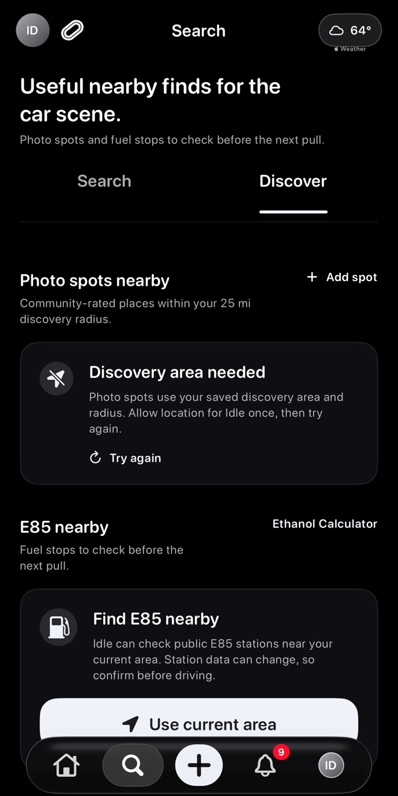
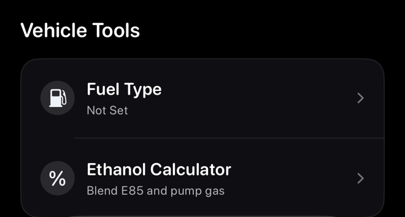
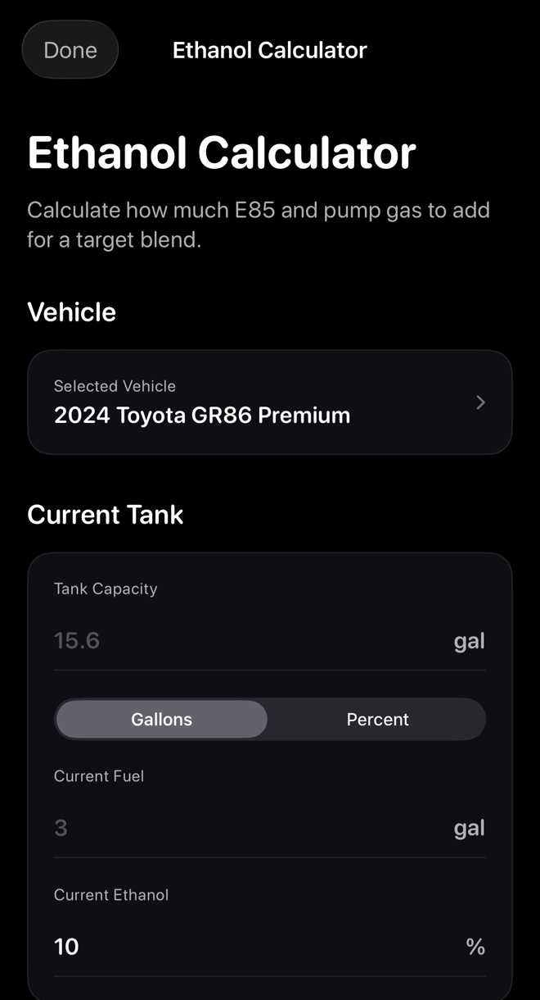
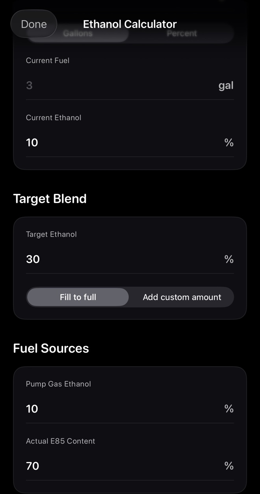

Screenshots show the Idle test drive in a prerelease build, version 1.3.0 (1), with Dark appearance and BMW Alpine White. Your app may look different. Learn about the test drive.
Find nearby E85
- Open Search in Idle, then select Discover.
- Scroll to E85 nearby and tap Use current area.
- Allow location if your iPhone asks.
- Review nearby station options and details when available.
- Confirm station details before driving, especially availability and hours.


Save fuel details
- Open GarageGo to Profile > Garage and choose one of your own vehicles. Scroll to Vehicle Tools for Fuel Type and Ethanol Calculator.
- Add fuel settingsSave details like fuel type, tank size, pump gas, ethanol defaults, and notes when useful.
- Keep it currentUpdate saved details if your setup changes.


Use the ethanol calculator
The ethanol calculator uses your inputs to estimate how much E85 and pump gas to add for a target blend. You can use saved vehicle defaults or enter values manually.
- Open Ethanol Calculator from Search > Discover or your vehicle's Vehicle Tools.
- Check the selected vehicle.
- Enter Tank Capacity and Current Fuel. The current-fuel controls offer Gallons or Percent.
- Enter Current Ethanol for the fuel already in the tank.


Set the target blend and fuel sources
- Enter Target Ethanol for the blend you want.
- Review Fill to full or Add custom amount.
- Check Pump Gas Ethanol and Actual E85 Content against the fuel you plan to use.
- Review the Result section after entering the required values.
If Result asks for your tank, current fuel, target blend, and fuel source values, complete those inputs first.


Troubleshooting
- No E85 resultsCheck location permission, your connection, and whether nearby station data is available.
- Station details look wrongConfirm with the station before driving and send support the station name, city, and screenshot.
- Calculator result looks unexpectedCheck the current fuel amount, current ethanol, target ethanol, and fill amount.
- Fuel profile will not saveMake sure you are editing your own garage vehicle and try again.
Use supported blends only
The calculator is a planning tool from your inputs. Only use fuel blends your vehicle, tune, and parts support.
Still need help?
Email support@idlemeets.com with your iPhone model, city, and the fuel tool or station you were using.